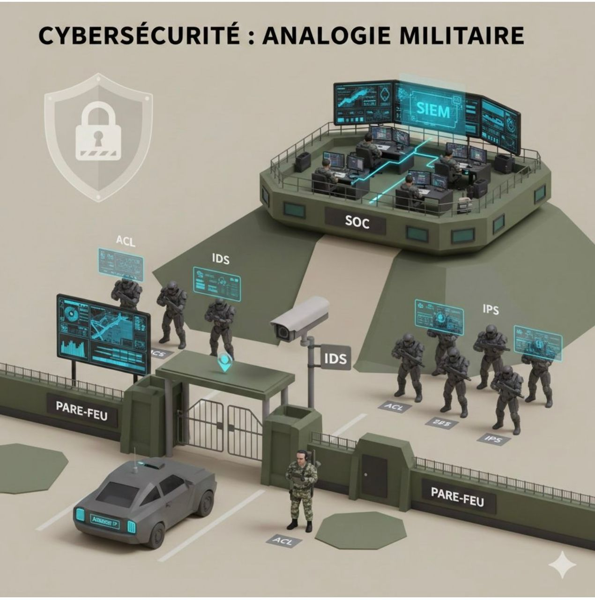

Ce projet présente une Plateforme DevOps sécurisée pour le déploiement d’un site web et d’une application containerisée. L’objectif général est de construire une chaîne d’intégration et de livraison continues (CI/CD) robuste, reproductible et auditable, permettant aux équipes de développement et d’exploitation de collaborer efficacement tout en garantissant la confidentialité, l’intégrité et la disponibilité des services.
La solution combine des pratiques DevOps modernes (automatisation des pipelines, gestion d’artefacts et d’images, orchestration de conteneurs) et des mécanismes de cybersécurité (contrôles d’accès, gestion des secrets, scans de vulnérabilités, chiffrement en transit et au repos). Elle vise à réduire le temps de mise en production, minimiser les erreurs humaines et fournir des processus de déploiement réversibles (rollbacks, blue/green, canary) pour limiter l’impact des régressions.
Sur cette page d’accueil, vous trouverez une présentation synthétique du projet, ses motivations, les principaux composants techniques et les bénéfices attendus pour une organisation. Chaque page du site détaille une partie spécifique : les objectifs stratégiques, le fonctionnement du pipeline, les mesures de sécurité, la supervision et le profil de l’auteur. Le contenu fourni ici est conçu pour être clair pour des responsables techniques, des architectes et des étudiants souhaitant comprendre comment concevoir et exploiter une plateforme DevOps sécurisée en production.
Enfin, le projet insiste sur la traçabilité et la transparence : toutes les étapes de construction des images, des tests et des déploiements sont consignées dans des logs centralisés, horodatés et conservés pour permettre des audits. L’approche privilégie l’infrastructure as code (IaC), l’automatisation des tests de sécurité et la surveillance continue afin d’atteindre des niveaux de service mesurables et un retour d’expérience itératif. Cette page sert d’introduction et de guide pour naviguer vers des chapitres plus détaillés sur chaque aspect du projet.